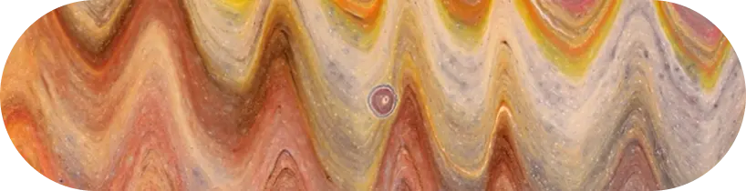
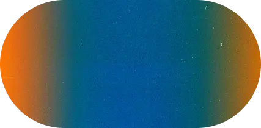

THE
ECONOMY
OF
ATTENTION


Every pixel is a transaction. In a world saturated with noise, attention is the scarcest resource — and the one most often squandered. I apply radical subtraction to ensure focus is never stolen, only directed. I don't just design interfaces; I manage the clarity of the interaction.
Filter out the noise
THE
RESULT

Filtering is an act of preservation. These cases represent the successful navigation of noise...